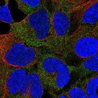
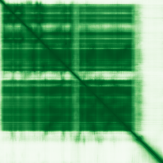
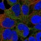

type: protein-evaluation gene: "CAMK1" date: 2026-05-31 tags: [protein-scout, nucleus-cytoplasm, evaluation] status: scored ---
CAMK1 核蛋白评估报告
1. 基本信息
| 项目 | 内容 |
|---|---|
| 基因名 | CAMK1 |
| 蛋白全名 | Calcium/calmodulin-dependent protein kinase type 1 |
| 蛋白大小 | 370 aa / 41.3 kDa |
| UniProt ID | Q14012 |
2. 评分总览
| 维度 | 得分 | 新权重 | 加权后 | 关键证据摘要 |
|---|---|---|---|---|
| 核定位特异性 | 5/10 | ×4 | 20.0 | UniProt Nucleus + Cytoplasm (ECO:0000250); GO nucleus IEA |
| 蛋白大小 | 6/10 | ×1 | 6.0 | 370 aa, 41.3 kDa，中等大小 |
| 研究新颖性 | 6/10 | ×5 | 30.0 | Strict=53 |
| 三维结构 | 7/10 | ×3 | 21.0 | 4 PDB X-ray 结构 (kinase domain, 2.20-2.70 A)；pLDDT 78.4 |
| 调控结构域 | 5/10 | ×2 | 10.0 | 蛋白激酶结构域 (IPR000719, PF00069)，CaM 调控 |
| PPI 网络 | 7/10 | ×3 | 21.0 | STRING 强 CaM 网络; IntAct 多重互作; UniProt ATXN1/CALM3 等 |
| 加权总分 | 108/180** | |||
| 互证加分 | +0.0 | 核定位均为预测证据（ECO:0000250, IEA） | ||
| 归一化总分 (÷1.83) | 59.0/100** |
PubMed strict: 53
3. 详细分析
3.1 核定位证据
| 来源 | 定位 | 可信度 |
|---|---|---|
| UniProt | Cytoplasm (ECO:0000250); Nucleus (ECO:0000250) | 序列类比预测 |
| GO-CC | cytoplasm (IBA); cytosol (TAS); nucleus (IEA); postsynaptic density (IBA) | nucleus 为电子注释预测 |
| HPA (IF) | 有 IF 缩略图，原图未取得 | 间接支持 |
HPA IF 状态: IF thumbnail only — HPA 暂无 IF 原图，仅获取到 60x60 缩略图，不能作为可靠定位证据。核定位基于 UniProt + GO-CC。 
结论: CAMK1 核定位证据为预测级别，缺少实验赋值。但作为 CaM kinase，其底物包含转录因子（CREB1, ATF1）和 HDAC5（核质穿梭调控），功能上支持核-胞质定位。
3.2 结构与结构域
| 指标 | 数值 |
|---|---|
| AlphaFold | AF-Q14012-F1 |
| 平均 pLDDT | 78.4 |
| pLDDT >90 | 48.1% |
| pLDDT 70-90 | 24.1% |
| pLDDT 50-70 | 8.1% |
| pLDDT <50 | 19.7% |
| PDB | 4FG7 (2.70 A, A=1-293), 4FG8 (2.20 A, A/B=1-315), 4FG9 (2.40 A, A/B=1-320), 4FGB (2.60 A, A=1-320)，均为 X-ray |
| InterPro | IPR011009 (Kinase-like), IPR000719 (Protein kinase), IPR017441 (ATP-binding), IPR008271 (Ser/Thr kinase active site) |
| Pfam | PF00069 (Protein kinase domain) |

3.3 研究现状
| 指标 | 数值 |
|---|---|
| PubMed strict (Title/Abstract) | 53 |
| PubMed broad | 187 |
| 别名 | 无 |
关键文献：
- PMID:24825433 — "CAMK1 phosphoinositide signal-mediated protein sorting and transport network in human HCC" (Cell Biochem Biophys, 2014)
- PMID:33342045 — "Expression of CAMK1 and its association with clinicopathologic characteristics in pancreatic cancer" (J Cell Mol Med, 2021)
- PMID:33238205 — "Exosomal miR-211 contributes to pulmonary hypertension via attenuating CaMK1/PPAR-γ axis" (Vascul Pharmacol, 2021)
- PMID:38216068 — "IGF2BP3-stabilized CAMK1 regulates mitochondrial dynamics of renal tubule to alleviate diabetic nephropathy" (Biochim Biophys Acta, 2024)
CAMK1 是经典 CaMKK-CaMK1 级联的组成部分，调控转录因子、细胞周期、肌细胞分化和神经突生长。研究量中等（strict=53），新颖性一般。
3.4 PPI 网络（三源综合）
| Partner | Source | Score/Evidence | Relevance |
|---|---|---|---|
| CALM3 | STRING | 0.998 (exp 0.952) | Calmodulin，核心调控因子，最强实验支持 |
| CALM1 | STRING | 0.982 (exp 0.936) | Calmodulin 1 |
| CALM2 | STRING | 0.969 (exp 0.933) | Calmodulin 2 |
| CALML3 | STRING | 0.958 (exp 0.275) | Calmodulin-like 3 |
| CALML5 | STRING | 0.956 (exp 0.246) | Calmodulin-like 5 |
| CALM1 | IntAct | affinity chromatography (PMID:16512683) | Calmodulin 1 |
| ATXN1 | IntAct | validated two hybrid (PMID:32296183) | Ataxin-1，神经退行性疾病 |
| IL16 | IntAct | anti tag coIP (PMID:28514442) | Interleukin 16，免疫调控 |
| ATXN1 | UniProt | 12 experiments | Ataxin-1，最强 UniProt 互作 |
| HTT | UniProt | 3 experiments | Huntingtin，神经退行性疾病 |
| CALM3 | UniProt | 2 experiments | Calmodulin 3 |
| CAMK1D | UniProt | 3 experiments | CaM kinase I delta，同工型 |
| IL16 | UniProt | 3 experiments | Interleukin 16 |
STRING 网络以 CaM/calmodulin 家族为核心（CALM1-3, CALML3-6），其中 CALM3 实验 score 达 0.952。UniProt 记录 ATXN1 (12 experiments) 为最强互作。PPI 网络覆盖钙信号、神经退行性疾病（ATXN1, HTT）和免疫调控（IL16），但不涉及经典染色质复合体。
4. 总体评价
CAMK1 是经典 CaM 激酶，功能广泛覆盖转录调控、细胞分化和神经发育。核定位仅有预测证据，但底物网络（CREB1, ATF1, HDAC5）强烈指向核-胞质功能。研究量中等，作为已知激酶新颖性有限。建议作为中等优先级核-胞质候选，若需提升置信度需补内源 IF 核定位。
5. 数据来源
- UniProt: https://www.uniprot.org/uniprotkb/Q14012
- AlphaFold: https://alphafold.ebi.ac.uk/entry/Q14012
- PDB: 4FG7, 4FG8, 4FG9, 4FGB
- PubMed: https://pubmed.ncbi.nlm.nih.gov/?term=CAMK1
- Protein Atlas: https://www.proteinatlas.org/search/CAMK1（IF 缩略图）

HPA IF 图像已本地嵌入。